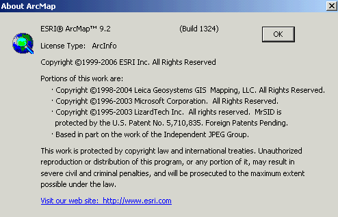
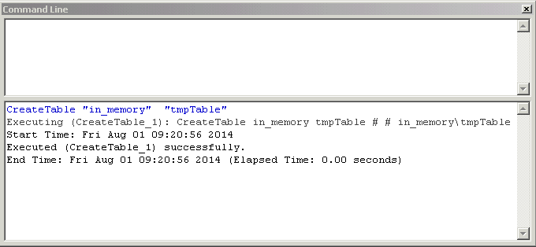
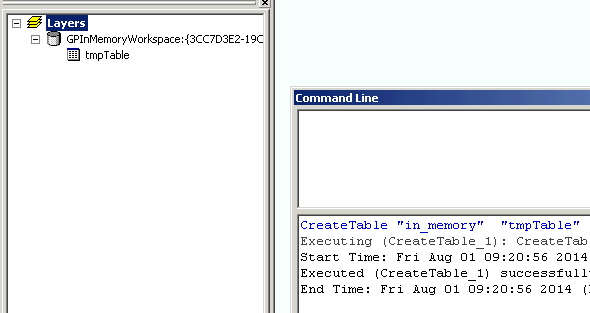
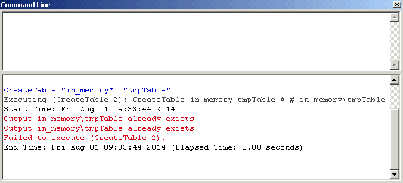
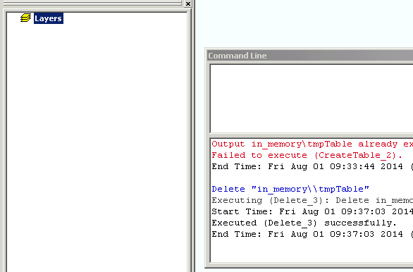
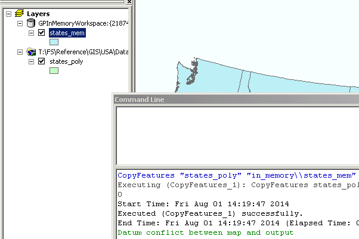

What's in a Name: When in_memory = In-memory
Posted by Joshua Bixby Aug 1, 2014
|
|
What's in a Name: When in_memory = In-memory Posted by Joshua Bixby Aug 1, 2014 |
This is the first in a four-part series on the challenges of naming new features in software applications; particularly, the consequences when naming falls short. The first part in the series looks at a case when the name of a new feature clearly and succinctly describes the behavior of that feature. The second part in the series looks at that same case when newer yet functionality alters the original behavior of that new functionality. The third part in the series looks at how the documentation has changed to addresses this altered functionality. And finally, the fourth part in the series discusses what it all means to end users and developers.
When deciding what to call a new feature in a software application, relatively short and relatively descriptive usually win out. It makes sense, really, who wants to bust out the Help or a super-decoder ring just to get an idea of what a feature might or might not do. There are risks, however, with trying to be too short or too descriptive. The former often leads to important qualifiers or fine print being left out, and putting the former and latter together typically lulls users into a false sense of understanding, i.e., assuming what the feature does instead of knowing. If the act of naming a new feature doesn't pose enough of a challenge, staying true to the name over time poses an even bigger challenge.
So why bring up the challenge of naming new features and staying true to those names over time? Well, because the challenge of staying true to a name has proven too much for at least one feature in ArcGIS, and the handling of the situation has become a failure in and of itself, in my opinion.
Back around the time Borat was touring the country learning about American culture, Esri released ArcGIS 9.2 (ArcGIS for Desktop Product Life Cycle Support Status). Its too bad he didn't swing by the Institute when passing through the Orange Empire, that would have been worth the ticket price alone. One of the new features introduced in ArcGIS 9.2 was the "in-memory workspace for writing temporary feature classes and tables," which could "greatly improve the performance of models, especially when writing intermediate (scratch) data" (What's New in ArcGIS 9.2). Needless to say, I was interested.
Although I don't have screenshots from that time, fortunately my agency's Wayback Data Center still has ArcGIS 9.2 installed, build 1324 nonetheless! Let's role the clock back and see the in-memory workspace at its beginnings.

After launching ArcMap, I was momentarily thrown by the Command Line. The Python window didn't replace the Command Line until ArcGIS 9.4, aka ArcGIS 10.0 (What's New in ArcGIS 9.4 - no link, don't think I can post a copy of the PDF either). After taking a few minutes to reacquaint myself with the Command Line, it was time to get down to business. Since this post is about the naming of features and not their performance, we won't need many examples to see whether the new in_memory workspace is really in-memory.
One of the simplest examples I can think of is to create a new table in-memory:

So, let's take a look at the Source tab in the Table of Contents:

There it is, a new table in the GPInMemoryWorkspace. What about creating the same table again:

So far, so good. We expect an error given that the table already exists. Let's take a look at the Table of Contents after I try deleting the in-memory table:

Still going well. The Delete command works and the in-memory table is gone.
Although I won't clutter up the post with more screenshots, I will say creating in-memory feature classes turned out the same way tables did above. Also, creating in-memory feature classes and tables using ArcToolbox yielded the same results as with the Command Line.
Looking for an example that actually involves some data, I loaded a feature class containing the U.S. State boundaries into ArcMap. A simple Copy Features command using in_memory should do the trick if in-memory workspaces are working as advertised.

Well, there we are, a copy of the features loaded into an in-memory workspace.
The basic examples above are far from a definitive test, but they do show that starting with ArcGIS 9.2 users have the ability to store intermediate data in-memory while working in ArcMap. Overall, I would have to say the marketroids were right on this one. The in_memory workspace really is in-memory, at least within the scope of its design.
When it comes to the challenge of naming a new feature, I think Esri can claim success with 'in_memory.' The name is short, descriptive, and most importantly, accurate. The question or challenge now becomes whether 'in_memory' can remain true to its original functionality as even newer features are introduced with subsequent versions of ArcGIS Desktop.